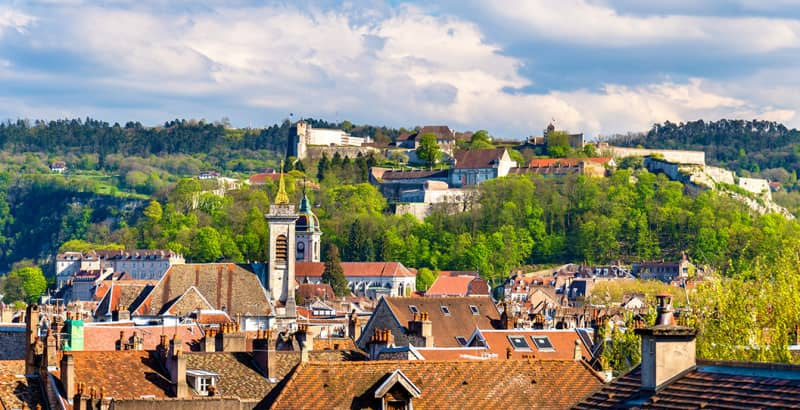
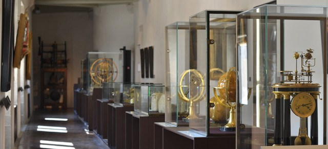

En esta pagina podras encontrar toda la informacion necesaria sobre Besancon, Lugares, comida, etc.
Besanzón es una ciudad y comuna francesa situada en el este del país, en el departamento de Doubs y región de Borgoña-Franco Condado. Ubicada en el borde del macizo del Jura, a menos de sesenta kilómetros de Suiza,
está rodeada de colinas y es atravesada por el río Doubs.
La población de la ciudad propiamente dicha es de 117 912 habitantes, y constituye el centro de un área metropolitana de 280 701 habitantes.
De la región histórica y cultural de Franco Condado, Besanzón es hoy en día un importante centro administrativo dentro de la región administrativa de Borgoña-Franco Condado, albergando la sede del consejo regional y la región académica, así como varias direcciones regionales. También es la sede de una de las quince provincias eclesiásticas francesas y una de las dos divisiones del Ejército de Tierra Francés. Establecida en un meandro del río Doubs, la ciudad juega un papel importante desde la era galorromana bajo el nombre de Vesontio, capital de los Sécuanos. Su geografía y su historia específica la han convertido en un bastión militar, una ciudad guarnición, un centro político y una capital religiosa. Cuna histórica de la relojería francesa, Besanzón ha heredado este saber hacer para convertirse en un importante centro industrial formado por empresas innovadoras en el campo de la microtecnología, la micromecánica y la ingeniería biomédica. Ciudad universitaria, su universidad fundada en 1423 (en Dole, fue trasladada a Besanzón en 1691) acoge cada año a más de 20 000 estudiantes, así como a unos 4000 alumnos de todo el mundo dentro del Centro de Lingüística Aplicada. Reconocida como la ciudad más verde de Francia, la ciudad cuenta con una calidad de vida reconocida a nivel nacional y remarcada por sus innovaciones sociales y ecologistas. Las fortificaciones de Besanzón, en particular su ciudadela construida por Vauban, están inscritas en la lista del Patrimonio de la Humanidad desde 2008.
Aqui os daremos varias opciones para ver en Besanzón
El monumento que constituye el símbolo de la ciudad de Besanzón es la ciudadela construida por Vauban, el famoso ingeniero militar del rey Luis XIV. Se edificó entre 1668 y 1711 en el emplazamiento del Mont Saint-Étienne, destacando a más de 100 metros sobre la antigua ciudad. La ciudadela es la atracción turística más visitada de la región del Franco Condado y uno de los más visitados de Francia con alrededor de 270.000 visitantes cada año.
Si quieres saber mas sobre la Citadelle de Besanzon Hoy, la ciudadela es un centro multicultural que cuenta con dos museos: el Museo de la Resistencia y de la Deportación y el Musée Comtois que presenta las tradiciones populares de la región del Franco Condado. El monumento posee también un jardín zoológico especializado en la preservación de especies en vías de desaparición (macacos de Japón, tigres de Siberia...), un acuario, un insectarium (insectos vivientes) y un noctarium (animales nocturnos de la región). La ciudadela es la llave del sistema de fortificaciones, pero muchos otros edificios militares se pueden destacar en la ciudad y sus alrededores. Además de la ciudadela, Vauban edificó el Fuerte Griffon que puede considerarse como una segunda ciudadela, un cinturón de murallas para el cual diseñó bastiones con bóvedas gruesas y dos plantas desde donde disparar al atacante, y cuarteles para albergar una guarnición de 1.500 a 2.000 soldados.El Museo del Tiempo se encuentra en el Palacio Granvelle de Besançon. Es el museo más grande de Francia dedicado a medir tiempos. Presenta una colección de relojes, así como calendarios y otros dispositivos para determinar el tiempo, desde la antigüedad hasta la actualidad. La ubicación del museo no es casual. Besançon fue en el pasado la capital de la relojería francesa. Los relojes locales golpearon la corte real, decoraron las torres de iglesias, castillos y ayuntamientos. Aquí se produjeron tanto relojes domésticos como grandes mecanismos astronómicos. La colección del Palacio Grenvelle es un tributo a esta tradición centenaria. En la exposición, se pueden ver relojes astronómicos que muestran no solo las horas, sino también las fases de la luna, las estaciones y los días del mes. Están ricamente decoradas y algunas tienen figuras en movimiento. La colección también incluye relojes de arena, gnomos, relojes mecánicos y relojes electrónicos modernos. Aquí puede ver los relojes de las casas hechos de madera, porcelana y metales, a menudo decorados con pinturas y tallas, relojes de bolsillo y de mano, y el mecanismo del reloj de la ciudad. Tampoco se ha olvidado el desarrollo de la tecnología. Muestra relojes de cuarzo y atómicos, así como mecanismos precisos controlados por computadora.
Si quieres saber mas del museo del tiempo y sus reseñas
Pincha aquíLa iglesia del siglo XII, reconstruida muchas veces, tiene elementos románicos, góticos y barrocos. del reloj astronómico del siglo XIX, considerado una obra maestra del género a escala mundial. Un monumento inusual es el llamado St. John's Rose: una mesa de altar redonda del siglo XI hecha de un bloque de mármol blanco.

Si quieres saber más sobre la Catedral de San Juan
Pincha aquíSi busca alojamiento
pinche aquí